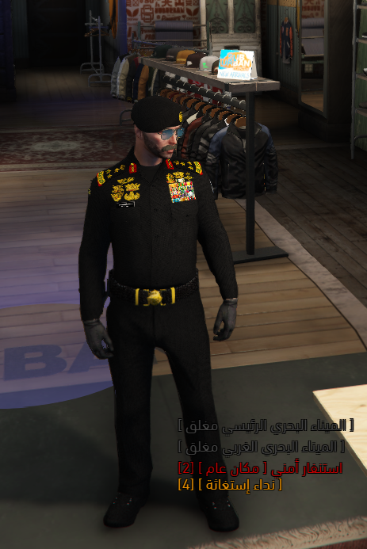
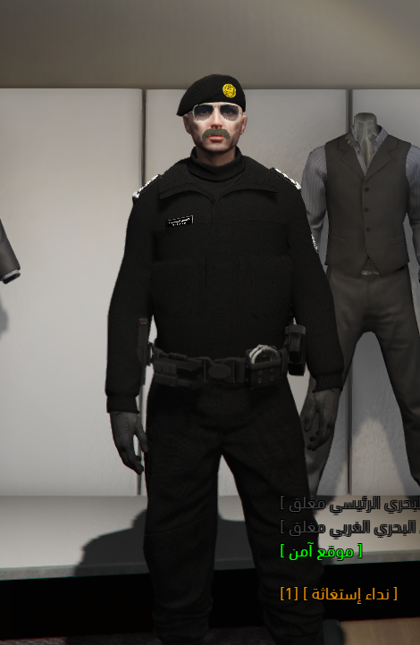
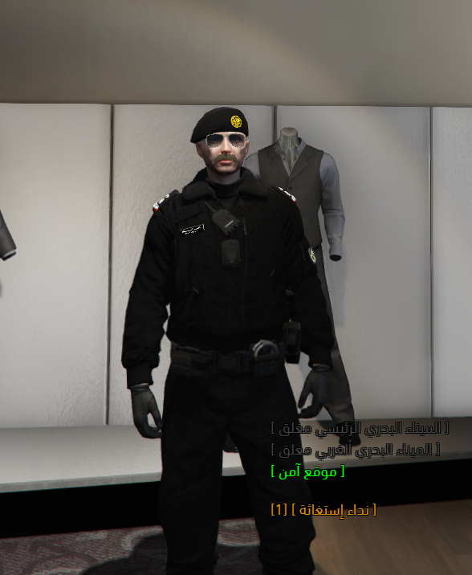
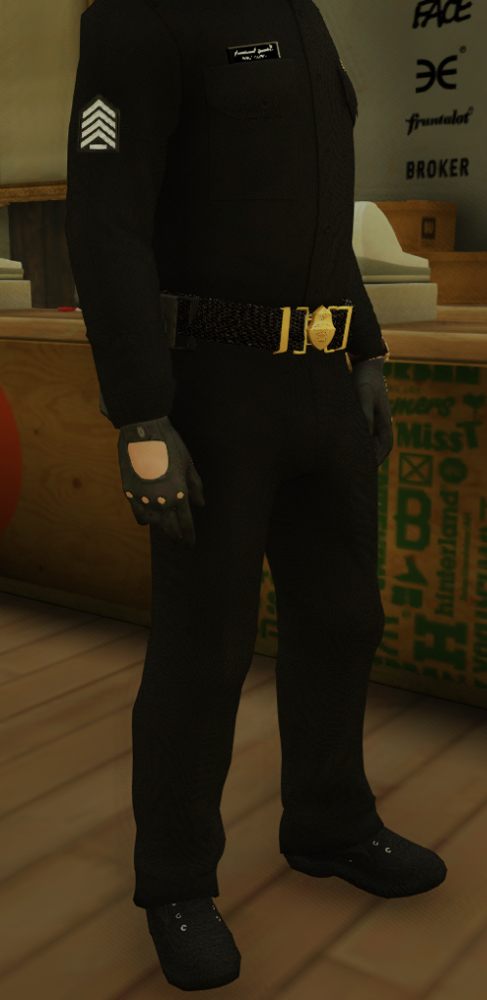
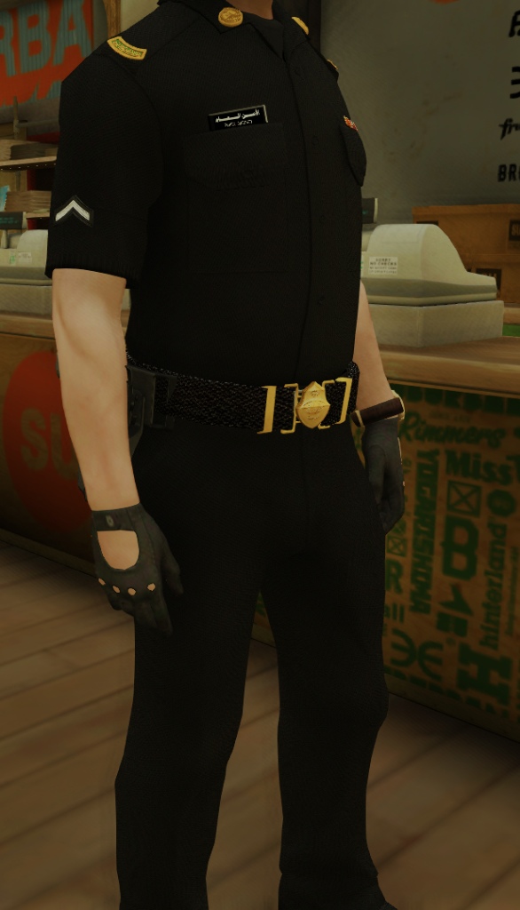
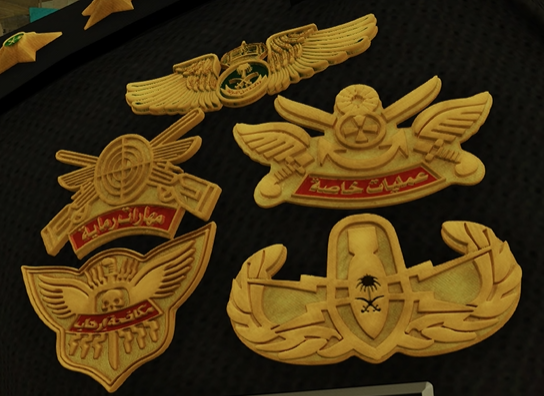
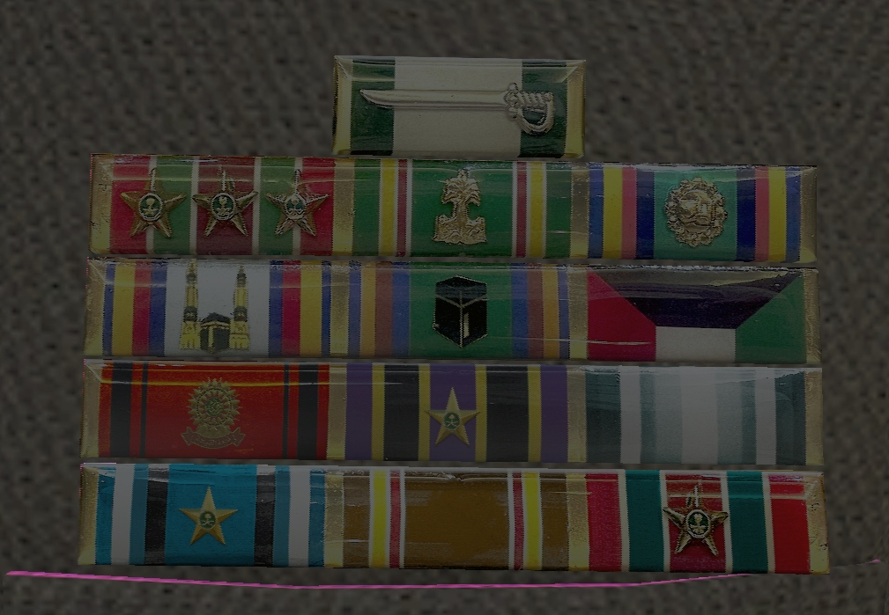
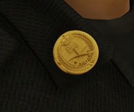
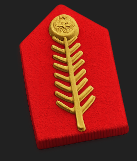
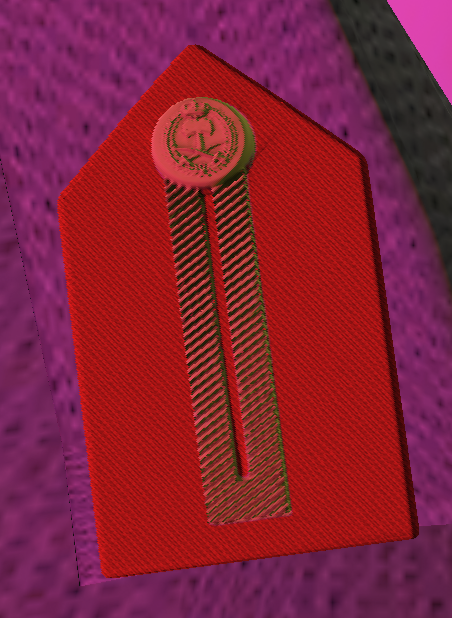

هو اللباس المعتمد والرمزي لضباط الأمن العام بمدينة الـ90 في المناسبات الرسمية والتشريفية والميدانية المعتادة. يتميز بتصميمه المهيب باللون الأسود الكامل والأزرار الذهبية، مع إبراز ريش الكتف المذهبة ورتب الضباط على الأكتاف بشكل واضح.

الزي المخصص للضباط خلال فترات البرد والأجواء الشتوية الميدانية. يتكون من قميص صوف شتوي مغلق الرقبة (High Neck) بلون أسود كامل، متناسق مع البيريه الميدانية ذات الشعار الذهبي، ويوفر الحماية مع الحفاظ على الهيبة العسكرية والمظهر الرسمي للضابط.

السترة الشتوية الفاخرة المخصصة لضباط الأركان بإدارة الأمن العام. تتميز بتصميم جاكيت شتوي سميك مبطن بالكامل للعمل الميداني والقيادي المتقدم في الأجواء الباردة، ومزود بجهاز الاتصال الميداني على الصدر لضمان سرعة التنسيق والتوجيه في الميدان.

هو اللباس الميداني الانتقالي المتميز بالكم الطويل لرجال الأمن. هذا الإصدار مسموح ومخصص حصرياً للارتداء بدءاً من رتبة **رقيب أول** فما فوق. ويتميز بوجود شارات الرتب المقلمة باللون الأبيض على الذراع بشكل جانبي بارز، مع الحزام الميداني ذي المشبك المذهب.

هو الزي الميداني الرسمي المعتمد لجميع أفراد وضباط صف الأمن العام من رتبة جندي وحتى رقيب. ويتميز بتصميمه ذي الأكمام القصيرة لتسهيل الحركة والتعامل السريع في المهام اليومية ونقاط التفتيش والدوريات الأمنية الميدانية.

شارات التخصص الميداني والمهارة الممنوحة لرجال الأمن العام، مثل شارة الرماية، مكافحة الإرهاب، العمليات الخاصة، المظليين، وتخصص المتفجرات. تُثبّت بشكل أساسي على الصدر فوق الجيب الأيسر.

الأوسمة والأنواط التشريفية التي تمنح لرجال الأمن العام كتقدير لشجاعتهم وإخلاصهم في حفظ الأمن وتقديم الخدمات الاستثنائية والجهود المتميزة في الميدان.
الشارة الدائرية الذهبية الفاخرة التي تحمل الشعار الوطني (السيفين والنخلة) مع التاج الملكي وعبارة "الأمن العام"، وهي ريشة مخصصة لارتداء الضباط على ياقة الزي العسكري.

الشارة المعدنية الدائرية المذهبة الخالية من التاج، وتثبت كرموز وريش مخصصة للأفراد وضباط الصف على الياقة لتمييز فئاتهم العسكرية في الميدان.

الريشة المطرزة الفاخرة للكتف العسكري المخصصة لرتبي القيادة العليا (لواء، فريق، فريق أول) ذات التصميم المورق العريض المطرز بالخيوط الذهبية على خلفية حمراء.

شارة الكتف والريشة الطولية ذات الخطين المطرزة بالخيوط الذهبية لضباط القيادة الوسطى والعليا برتبتي عقيد وعميد.